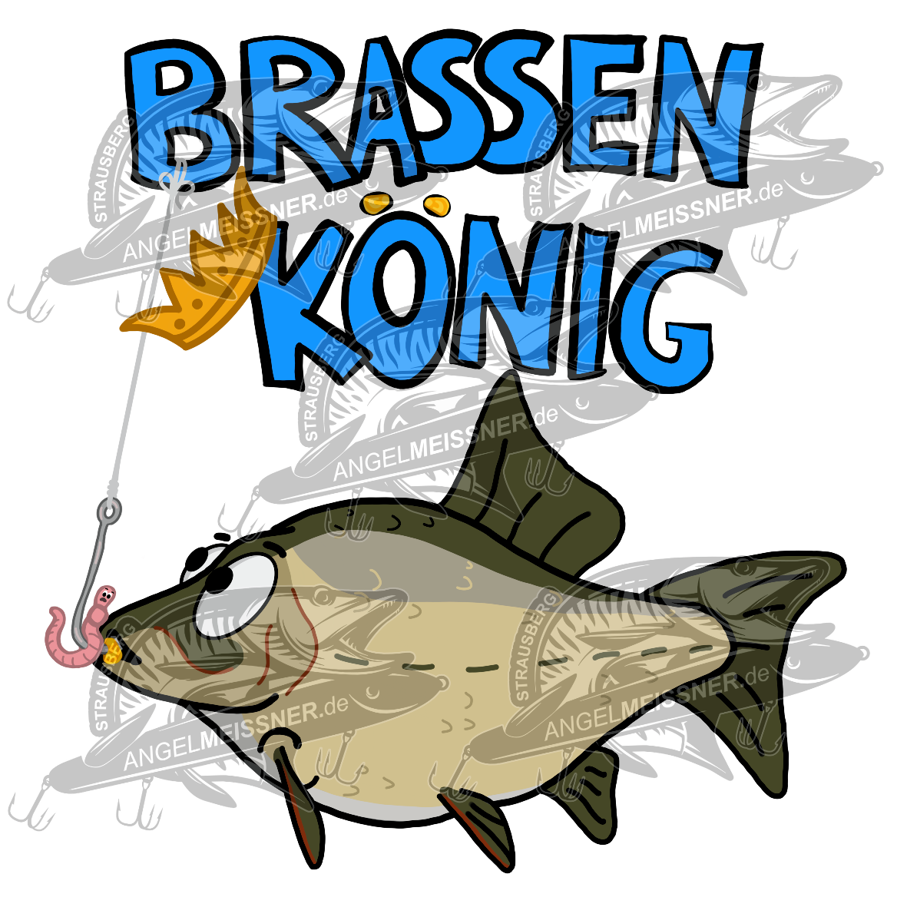

Angelladen
News
Angelkarten
Serviceangebot
Anfahrt / Kontakt
Partner
Angelladen
News
Angelkarten
Serviceangebot
Anfahrt / Kontakt
Partner
Aktuelles im Angelladen
Hier findet ihr alle wichtigen Ankündigungen.
Neue T-shirts

Ab sofort sind unsere neue T-shirts
"Brassen König"
im Angelladen verfügbar.
Mitarbeiter des Monats